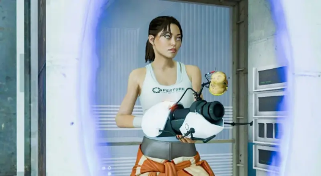
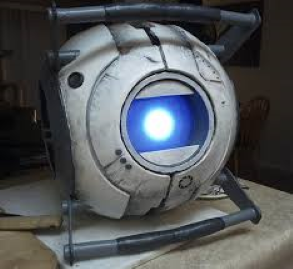
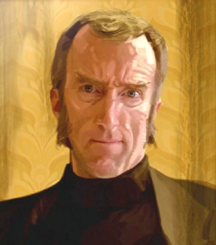
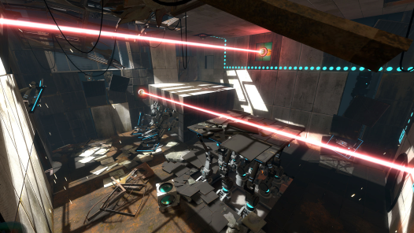
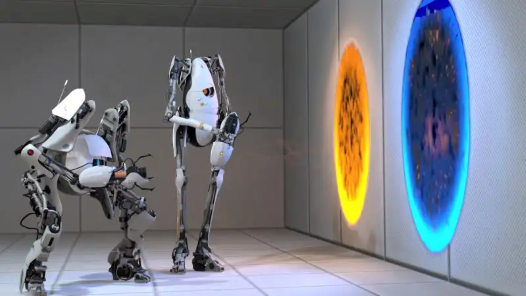

Portal 2 e as multiplas personalidades U-U
Portal 2, a sequência do revolucionário jogo de quebra-cabeças da Valve, continua a saga da protagonista silenciosa, Chell, em sua jornada através das câmaras de teste do Aperture Science. Lançado em 2011, este título amplia os limites estabelecidos por seu antecessor, oferecendo uma experiência focada na narrativa, mas mantendo sua jogabilidade inovadora e humor inteligente.

A história de Portal 2 mergulha mais fundo na "lore" do universo de Portal, revelando segredos há muito tempo guardados sobre a Aperture Science e seus testes esquisitos. Os jogadores são introduzidos a novos personagens memoráveis, como Wheatley, uma esfera de personalidade... Ãh... Um tanto quanto desajeitada, e Cave Johnson, o fundador da Aperture Science, que revela os altos e baixos da história da empresa.
 
A mecânica de jogo central de Portal 2 se mantém parecida com o anterior, com os jogadores utilizando a arma de portal para resolver uma série de desafios. No entanto, este título apresenta novos elementos de jogabilidade, incluindo melécas que alteram a física, cubos de refração e pontes de luz, que exigem dos jogadores uma abordagem mais criativa e estratégica para a resolução de quebra-cabeças.

Além da campanha para um jogador, Portal 2 também tem um modo cooperativo (isso mesmo, agora você E O SEU AMIGO podem usar os 2 neurônios que lhes restam para resolver desafios complicados), onde dois jogadores assumem o controle de robôs, trabalhando juntos para superar desafios exclusivos. Esta adição aumenta a experiência de jogo, incentivando a comunicação e a cooperação entre os jogadores para alcançar seus objetivos.
